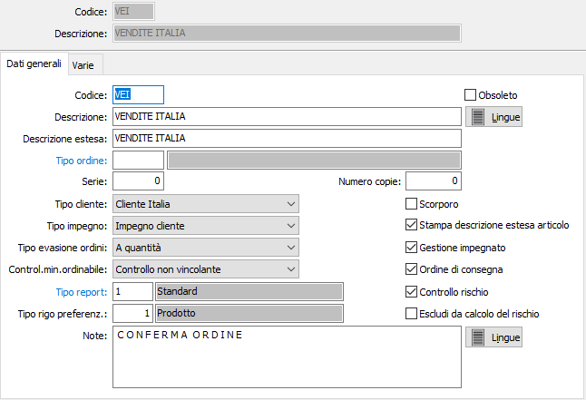
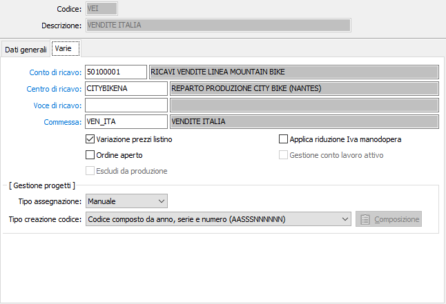
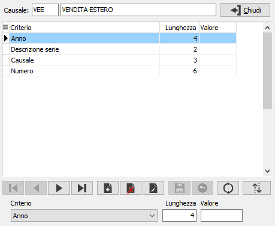

Causali ordini
Le causali ordini vengono utilizzate al momento dell’inserimento di un ordine di vendita e determinano il tipo di documento da emettere.
E’ possibile gestire più causali di ordini, e più numerazioni progressive (serie). In funzione dei flags e dei parametri indicati, una causale di ordine può dare origine ad un solo documento di trasporto, attivare o meno l’aggiornamento dell’”impegnato clienti”, applicare o meno lo scorporo dell’Iva sui prezzi praticati, e così via.
Linguetta Dati generali

CODICE: Codice alfanumerico di 3 caratteri, a libera scelta dell'utente, per individuare la causale attiva. Sul campo sono attive le funzioni di ricerca (F9) sulla tabella stessa.
OBSOLETO: flag attivabile dall’utente per inibire il possibile utilizzo dell’elemento di tabella in esame nelle successive transazioni.
DESCRIZIONE: Campo alfanumerico di 30 caratteri per inserire la descrizione della causale attiva. Questa descrizione viene stampata sui documenti se il programma di stampa lo prevede.
DESCRIZIONE ESTESA: Campo alfanumerico di 60 caratteri per inserire la descrizione estera della causale attiva ad uso interno dell’utente. Questa descrizione non viene stampata sui documenti ma viene visualizzata nelle viste.
TIPO ORDINE: Eventuale codice alfanumerico di 3 caratteri, presente nella tabella Tipologie Ordini, per assegnare la causale attiva ad un gruppo di ordini omogenei. Tale informazione, inserita nelle causali dei Ddt, determinerà che gli ordini contrassegnati dalla causale attiva potranno essere evasi solo con causali di Ddt che prevedano il legame con il tipo di ordine qui contenuto. L’informazione, mancando tali presupposti, può essere omessa. Sul campo sono attive le funzioni di ricerca (F9) e manutenzione (CTRL+W) sulla tabella stessa.
SERIE: Campo numerico per inserire il numero di serie del documento. Ciascuna serie attiva una propria numerazione di documenti. E’ necessario, in fase di immissione del documento, per proporre automaticamente e correttamente il numero progressivo del documento acquisito dalla tabella protocolli.
TIPO CLIENTE: Definisce se l'ordine è relativo ad un cliente Italia oppure ad un cliente estero; valori ammessi: clienti italia, clienti estero.
TIPO IMPEGNO: Indica su quale tipo di impegno dovrà, eventualmente, essere gestito l'aggiornamento da parte dell'ordine corrente; valori possibili: impegno cliente, impegno produzione.
TIPO EVASIONE ORDINI: Definisce se l'ordine dovrà essere evaso a quantità oppure a valore; valori possibili: a quantità, a valore.
CONTROLLO MIN. ORDINABILE: Indica se e quale controllo utilizzare sul documento relativamente alla quantità minima ordinabile del prodotto:
Nessun controllo
Controllo non vincolante
Controllo vincolante
TIPO REPORT: consente di specificare un tipo di report specifico per i documenti che saranno emessi utilizzando questa causale. Sul campo sono attive le funzioni di ricerca (F9).
NUMERO COPIE: Indicare il numero di copie da stampare, se zero saranno stampate le copie previste sull'anagrafica del cliente.
SCORPORO: Definisce se il documento è soggetto a scorporo dell'Iva dal totale del documento in fase di registrazione (casella con segno di spunta). In questo caso i prezzi inseriti nel documenti saranno al lordo di Iva.
STAMPA DESCRIZIONE ESTESA ARTICOLO: Indica se sull'ordine deve essere riportata e stampata la descrizione estesa dell'articolo, casella con segno di spunta.
GESTIONE IMPEGNATO: Flag per abilitare la gestione dell’impegnato clienti. La presenza della spunta determina l’aggiornamento dell’impegnato del cliente da parte della causale attiva. In caso contrario, l’aggiornamento non viene effettuato.
ORDINE DI CONSEGNA: Definisce se abilitare la sezione dell'ordine "Dati di consegna", casella con segno di spunta.
CONTROLLO RISCHIO: Definisce se al termine della registrazione dell'ordine deve essere fatto un ulteriore controllo sulla situazione del cliente, casella con segno di spunta.
Escludi da calcolo del rischio: Se presente la spunta i documenti emessi con la causale non saranno considerati nel calcolo del rischio (esclusi dal monte ordini). Se il parametro di configurazione "Gestione saldi clienti/fornitori" è impostato su "Gestione automatica", la variazione del flag sulla causale causerà, al momento del salvataggio, un immediato aggiornamento dei valore del monte ordine di tutti i documenti aperti; se il parametro di configurazione "Gestione saldi clienti/fornitori" è impostato a "Nessuna gestione", il campo è disabilitato e se si modifica la causale, al salvataggio, viene azzerato.
TIPO RIGO PREFERENZIALE: Indica il tipo rigo da proporre in fase di emissione dell'ordine. Sul campo sono attive le funzioni di ricerca (F9).
NOTE: Campo note a disposizione dell’utente.
Linguetta Varie

CONTO DI RICAVO: eventuale codice alfanumerico di 8 caratteri, presente in piano dei conti, per definire il sottoconto contabile di ricavo a cui verrà associato il rigo del documento. Sul campo sono attive le funzioni di ricerca (F9) e manutenzione (CTRL+W) sulla tabella stessa.
CENTRO DI RICAVO: campo significativo solo in presenza del modulo Contabilità analitica opportunamente configurato. Può contenere un codice alfanumerico di 15 caratteri, per definire il centro di ricavo a cui verrà associato il rigo del documento. Sul campo sono attive le funzioni di ricerca (F9) e manutenzione (CTRL+W) sulla tabella stessa.
VOCE DI RICAVO: campo significativo solo in presenza del modulo Contabilità analitica opportunamente configurato. Può contenere un codice alfanumerico di 15 caratteri, per definire la voce di ricavo a cui verrà associato il rigo del documento. Sul campo sono attive le funzioni di ricerca (F9) e manutenzione (CTRL+W) sulla tabella stessa.
COMMESSA: campo significativo solo in presenza del modulo Contabilità analitica opportunamente configurato. Può contenere un codice alfanumerico di 15 caratteri, per definire la commessa a cui verrà associato il rigo del documento. Sul campo sono attive le funzioni di ricerca (F9) e manutenzione (CTRL+W) sulla tabella stessa.
VARIAZIONE PREZZI LISTINO: definisce se dai documenti emessi con questa causale è consentito modificare i prezzi di listino in base a quanto definito sull'anagrafica dell'intestatario (casella con segno di spunta).
ORDINE APERTO: se spuntato, identifica gli ordini che utilizzano la causale come ordini aperti, cioè ordini che possono essere evasi generando nuovi ordini.
ESCLUDI DA PRODUZIONE: indica che per gli ordini inseriti con questa causale non dovranno essere generate richieste di produzione; la casella è utilizzabile se non è mai stata generata una richiesta di produzione.
APPLICA RIDUZIONE IVA MANODOPERA: Se spuntato indica che il documento creato con questa causale è soggetto ad IVA agevolata su ristrutturazioni.
GESTIONE CONTO LAVORO ATTIVO: se spuntato, identifica che la causale è riservata all’emissione di ordini del conto lavoro attivo.
TIPO ASSEGNAZIONE PROGETTI: Definisce come deve essere effettuata l'assegnazione del codice progetto sull'ordine:
Manuale: non viene effettuata nessuna assegnazione automatica e sarà l'utente a decidere se indicare o meno il codice progetto.
Tutto l'ordine: sarà assegnato un unico codice progetto a tutto l'ordine.
Singolo rigo: sarà assegnato un codice progetto univoco per ogni rigo dell'ordine.
TIPO CREAZIONE CODICE PROGETTO: Definisce come deve essere generato il codice del progetto; se l'assegnazione è per singolo rigo e non si è scelto di utilizzare il codice a barre, sarà aggiunto il numero del rigo (tre caratteri) in coda al codice del progetto preceduto dal carattere '-'. Se si sceglie l'opzione "Composizione variabile" sarà presente il bottone . Il bottone è attivo se non si è in modifica della causale e premendolo è possibile indicare la composizione del riferimento progetto tramite la seguente finestra:

La struttura del riferimento progetto può essere composta da una serie di valori così riepilogati che comunque non potranno superare la lunghezza massima di 15 caratteri:
Nessuno: da utilizzare per inserire delle parti fisse nel riferimento tramite il campo Valore.
Anno: sarà riportato l'anno dell'ordine.
Serie: sarà riportata la serie dell'ordine.
Descrizione serie: sarà riportata la descrizione della serie dell'ordine.
Causale: sarà riportato il codice della causale dell'ordine.
Numero: sarà riportato il numero dell'ordine.